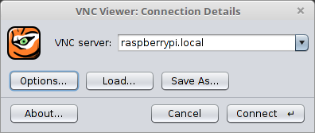
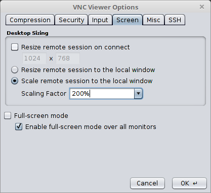

Wer sich gerne per Remote Control auf die grafische Oberfläche des Raspberry Pi verbinden möchte, kann dazu einen speziell angepassten VNC-Server benutzen.
Grundsätzliches
Virtual Network Computing, kurz VNC ist ein Dienst bei dem die grafische Oberfläche eines entfernten Computers auf einem anderen angezeigt wird. Die Tastatur- und Mauseingaben werden vom lokalen an den entfernten Computer übertragen.
VNC verwendet das Remote Framebuffer Protocol und ist damit plattformunabhängig benutzbar. Für den Raspberry Pi ist eine eigens angepasste Version verfügbar, die per Dispmanx API direkt GPU Funktionen nutzt.
Installation
In der Konfigurationsdatei muss der Treiber von vc4-kms-v3d auf vc4-fkms-v3d geändert werden.
# Enable DRM VC4 V3D driver
dtoverlay=vc4-fkms-v3d
Dann kann das Projekt heruntergeladen werden.
sudo apt install libvncserver-dev libconfig++-dev libgles2-mesa-dev libegl1-mesa-dev
cd /usr/src/
git clone https://github.com/patrikolausson/dispmanx_vnc.git
cd dispmanx_vnc
Im “Makefile” muss der Verweise auf OpenMax Library “-lopenmaxil” bei LIBS= entfernt werden. Danach lässt sich das Projekt kompilieren.
make
sudo cp dispmanx_vncserver /usr/local/bin/
Nun kann man noch einen automatischen Dienst erzeugen
sudo nano /etc/systemd/system/dmxvnc.service
In die Datei kopiert man folgende Anweisungen.
[Unit]
Description=Dispmanx VNC
[Service]
Type=simple
User=root
ExecStart=/usr/local/bin/dispmanx_vncserver
StandardOutput=null
[Install]
WantedBy=multi-user.target
Danach kann der Dienst aktiviert werden.
sudo systemctl daemon-reload
sudo systemctl enable dmxvnc
Dann könnte man den Dienst mit sudo service dmxvnc start starten oder einen Neustart durchführen.
Sollte man später das Programm direkt verwenden, also ohne Kompilierung, werden folgenden Runtime Bibliotheken benötigt:
sudo apt-get install libvncserver1 libconfig++9v5 libgles2-mesa libegl1
VNC Viewer (Client)
Es gibt eine Vielzahl an VNC Viewern, z. B. xvnc4viewer der mit dem Aufruf apt-get install xvnc4viewer installiert wird. Ein VNC Viewer auf Java Basis ist direkt portabel und kann auf allen Plattformen verwendet werden. Ich kann hier TigerVNC empfehlen, denn dieser Client kann auch den Bildschirm vergrößern. Er wird für alle Plattformen und auch für Java auf GitHub zur Verfügung gestellt.
Die Verbindung zur Raspberry Pi erfolgt über den Namen ‘raspberrypi.local’ und dem Port 5900.

Wenn man die Taste ‘Options…’ drückt, kann man bei den Einstellungen für die Bildschirmauflösung ‘Screen’, den Zoomfaktor eingeben. Mit dem Raspberry Pi funktioniert dies allerdings nur bis maximal 200 %.

Dann kann die grafische Oberfläche des Raspberry Pi direkt angezeigt und bedient werden. Man könnte z. B. ein PICO-8 Spiel programmieren oder testen.